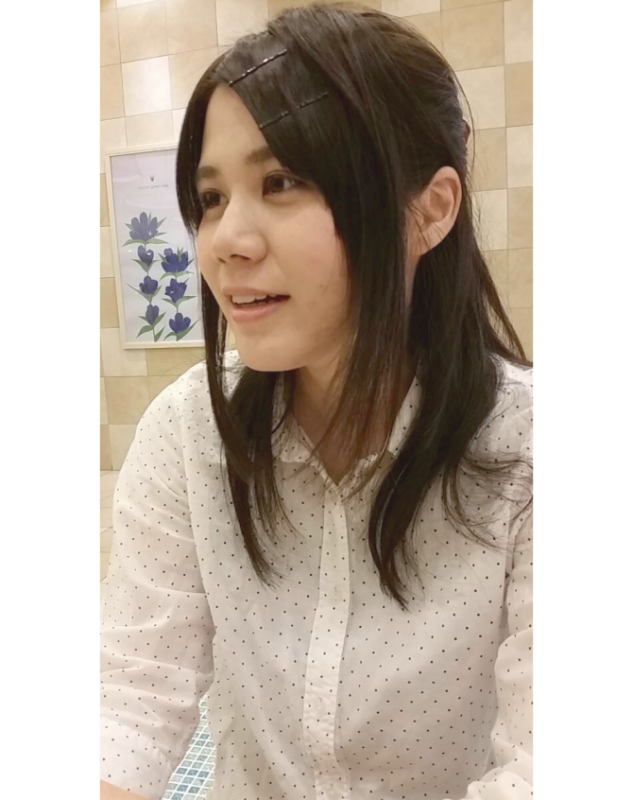

|  |
- 現在の仕事内容を教えてください。
社内で受注案件の作業
- やりがいはなんですか?
様々な言語に触れる機会が多いことです。 メインはjavaですが、javascriptやPHPやiphoneアプリの開発で使用するObjectiv-Cな ど案件ごとに異なる言語を使用して開発を行いますので、学ぶ機会は断然多いです。
- 今までで辛かったことを教えてください。
現在進行形ですが、作業を行う前に立てる内容や所要時間と実際の内容と所要時間とのギャップをなかなか埋められずにいることです。
- 最後に就職活動中の皆さんへ一言。
風通しがよく、アットホームな雰囲気の社内です。 想像を想像で終わらすことなく、手を挙げれば機会を得ることができます。 機会をものにできるかは、自分次第です。 皆さんの素敵なイメージを共に形にしていきましょう。 |